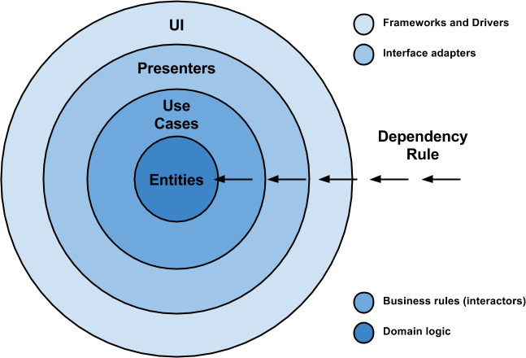

Architecting Android…The evolution
本文为翻译，在原文的基础上略有改动
http://fernandocejas.com/2015/07/18/architecting-android-the-evolution/
在开始之前，你最好阅读过这篇文章 （ http://xuyushi.github.io/2016/07/19/Android%20clean%20architecting/ ）

Android clean architecting
更多 Android 博文请关注我的博客 http://xuyushi.github.io
本文为翻译，在原文的基础上略有改动
http://fernandocejas.com/2014/09/03/architecting-android-the-clean-way/
Copyright © 2015 Powered by MWeb, Theme used GitHub CSS.